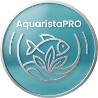

AquaristaPRO
Prepare seu aquário antes da próxima tempestade
O fenômeno El Niño traz dois grandes inimigos para o aquarismo: ondas de calor intenso e tempestades severas com quedas prolongadas de energia.
Quando a luz acaba no meio de um dia quente, o oxigênio dissolvido na água despenca rapidamente, enquanto a temperatura sobe e a filtragem biológica para. Este guia mostra como montar um protocolo de emergência antes que o temporal chegue.
Calor e falta de energia formam uma emergência combinada: o aquário perde oxigenação, circulação e estabilidade biológica ao mesmo tempo.
- Use nobreak senoidal puro em bombas convencionais; nunca ligue aquecedores nele.
- Um oxigenador recarregável com acionamento automático é a opção mais econômica e segura.
- Mantenha as mídias biológicas oxigenadas dentro do aquário durante apagões longos.
- Interrompa a alimentação e tenha zeólita disponível para reduzir a amônia.
- Resfrie gradualmente e evite baixar a temperatura mais de 2 °C por hora.
Monte o kit de emergência com antecedência: agir rápido reduz o estresse dos peixes e protege a colônia bacteriana.

1. Nobreak: Vale a Pena? Atenção ao Tipo de Onda
Manter o filtro principal rodando durante um apagão é o cenário ideal, mas escolher o nobreak errado pode danificar seus equipamentos.
- O risco da onda semissenoidal: Nobreaks simples de entrada, de 600 VA a 700 VA e na faixa de R$ 280 a R$ 560, geram onda semissenoidal (quadrada). Bombas comuns ligadas direto na tomada vibram, superaquecem, perdem vazão e podem até queimar nesse tipo de energia. Para bombas convencionais, use um nobreak senoidal puro, a partir de R$ 700 a R$ 1.100. Modelos mais simples só funcionam com segurança em bombas eletrônicas, com fonte de 12 V ou 24 V, pois a própria fonte converte a corrente.
- Autonomia limitada: Um nobreak padrão vem com bateria interna pequena, geralmente de 12 V 7 Ah. Mesmo ligando apenas uma bomba de 15 W a 20 W, ele segurará o sistema por cerca de 1h30 a 2h30. Nunca ligue termostatos ou aquecedores: eles drenam a carga em minutos.
Confira o tipo de onda indicado pelo fabricante e a potência real da bomba antes da compra. O nobreak não substitui um plano de oxigenação para apagões longos.
2. Oxigenação Automática de Longa Duração
Para proteger o aquário por dezenas de horas sem gastar alto com um nobreak senoidal puro e sem correr o risco de queimar a bomba do filtro, o compressor de ar recarregável com sensor de queda de energia é a solução mais segura e econômica.
Diferente dos modelos antigos a pilha, que exigem que você esteja em casa para ligar manualmente na hora do apagão, os modelos modernos ficam conectados na tomada em standby e ligam sozinhos no exato segundo em que a energia cai.
- Equipamento recomendado: A Bomba de Oxigênio Recarregável Knup (2 Saídas / 5000mAh) custa uma fração de um nobreak, aciona automaticamente na falta de luz e entrega até 80 horas de autonomia no modo intermitente. Por ter carregamento via USB, você pode estender esse tempo por dias conectando um Power Bank comum.
- Pulo do gato, salve sua biologia com as duas saídas: Coloque uma pedra porosa no fundo do aquário para oxigenar os peixes e posicione a segunda mangueira diretamente junto às suas mídias biológicas, dentro do filtro ou dentro do tanque caso tenha retirado os saquinhos. Esse fluxo direto de bolhas mantém as bactérias nitrificantes vivas e evita que a biologia morra durante apagões longos.
Deixe o oxigenador conectado e carregando em standby o tempo todo. Teste o acionamento antes da temporada de temporais.
3. Manejo de Emergência: Biologia e Controle de Amônia
Quando a circulação do filtro para por mais de 2 ou 3 horas, a água estagnada dentro dele perde oxigênio e acumula compostos tóxicos. Se a luz demorar a voltar, siga este protocolo:
- Transfira as mídias para o aquário: Abra o filtro, seja hang-on, canister ou sump, retire os saquinhos com cerâmicas e mídias biológicas e mergulhe-os dentro do aquário, bem próximos às bolhas da mangueira do oxigenador.
- Corte total na alimentação: Ao perceber que a luz caiu, ou diante de alertas de temporais severos, pare de alimentar os peixes imediatamente. Eles passam facilmente 2 a 3 dias em jejum sem problemas. Sem ração, produzem muito menos fezes e urina, evitando picos de amônia enquanto o filtro está parado.
- Use zeólita como segurança química: Tenha sempre um pacote guardado no armário. Esse mineral natural absorve a amônia diretamente da água por troca iônica, segurando as pontas até a filtragem biológica se restabelecer.
Não use zeólita se o aquário tiver tratamento com sal, pois o sal libera a amônia retida na pedra.
4. Controle do Calor Extremo sem Choque Térmico
O El Niño eleva as temperaturas facilmente acima dos 30 °C. Isso acelera o metabolismo dos peixes, reduz o oxigênio dissolvido na água e estressa espécies sensíveis, como Acarás-Disco, Bandeiras, Tetras e Camarões.
- Apague as luminárias: A iluminação gera calor extra na superfície. Nos dias mais quentes, reduza o fotoperíodo ou desligue as luzes nos horários de pico, entre 12h e 16h.
- Resfriamento por evaporação: Apontar um cooler ou ventilador para a superfície consegue baixar a temperatura do tanque entre 2 °C e 4 °C de forma gradual e segura.
- Garrafa congelada na emergência: Se a água passar dos 30 °C e você estiver sem energia para ligar coolers, coloque uma garrafa PET com água congelada flutuando no aquário. Nunca jogue gelo direto na água e monitore o termômetro para não baixar mais de 2 °C por hora.
5. Checklist Rápido de Emergência para Deixar na Gaveta
Monte seu kit de sobrevivência antes da próxima onda de calor:
- Compressor de ar recarregável com acionamento automático, mantido na tomada em modo standby.
- Power Bank 10.000mAh ou 20.000mAh 100% carregado com cabo USB compatível.
- 1 pacote de zeólita e saquinho de mídia (bag) para emergências de amônia.
- Condicionador de água, como Seachem Prime, pois em emergências químicas uma dose extra ajuda a neutralizar temporariamente a toxicidade da amônia e do nitrito.
- Garrafas PET com água já congeladas no freezer.
- Termômetro digital ou de vidro de fácil leitura para monitorar oscilações rápidas.
Produtos recomendados para a emergência
Este artigo contém espaços para links de afiliados. Substitua os placeholders pelos produtos e links aprovados antes da publicação.
Compressor de Ar Recarregável
Oxigenação automática
[Nome do Compressor 1]
Prós
- Acionamento automático
- Bateria recarregável
- Boa autonomia
Contras
- Vazão pode variar
- Exige testes prévios
- Ruído em alguns modelos
Duas saídas
[Nome do Compressor 2]
Prós
- Duas pedras porosas
- Carregamento USB
- Compacto
Contras
- Autonomia depende do modo
- Mangueiras vendidas à parte
- Potência limitada
Uso emergencial
[Nome do Compressor 3]
Prós
- Fácil de instalar
- Portátil
- Sensor de queda
Contras
- Precisa ficar carregado
- Não substitui o filtro
- Limpeza periódica
Zeólita Removedora de Amônia
Controle químico
[Nome da Zeólita 1]
Prós
- Absorve amônia
- Uso simples
- Pronta para emergências
Contras
- Não substitui a biologia
- Tem capacidade limitada
- Não usar com sal
Mídia filtrante
[Nome da Zeólita 2]
Prós
- Vários tamanhos
- Fácil de dosar
- Boa armazenagem
Contras
- Precisa de saquinho
- Deve ser trocada
- Não remove todo poluente
Kit de emergência
[Nome da Zeólita 3]
Prós
- Pacote econômico
- Boa reserva
- Compatível com filtros
Contras
- Requer monitoramento
- Pode saturar
- Não reduz temperatura
Cooler ou Ventilador para Aquário
Resfriamento
[Nome do Cooler 1]
Prós
- Resfriamento gradual
- Baixo consumo
- Fácil instalação
Contras
- Aumenta evaporação
- Pode fazer ruído
- Exige reposição de água
Ventilação de superfície
[Nome do Cooler 2]
Prós
- Boa circulação de ar
- Montagem prática
- Ajuda na oxigenação
Contras
- Depende de energia
- Não serve para todo aquário
- Evaporação mais rápida
Controle térmico
[Nome do Cooler 3]
Prós
- Formato compacto
- Operação simples
- Ajuda em ondas de calor
Contras
- Não substitui termômetro
- Pode ressecar o ambiente
- Não funciona no apagão
Power Bank
Energia USB
[Nome do Power Bank 1]
Prós
- 10.000mAh
- Portátil
- Recarrega o compressor
Contras
- Exige cabo compatível
- Perde carga parado
- Não alimenta aquecedor
Alta capacidade
[Nome do Power Bank 2]
Prós
- 20.000mAh
- Maior autonomia
- Várias portas USB
Contras
- Mais pesado
- Recarga mais demorada
- Requer armazenamento seguro
Reserva de emergência
[Nome do Power Bank 3]
Prós
- Indicador de carga
- Proteções integradas
- Uso versátil
Contras
- Capacidade real varia
- Precisa ser testado
- Não substitui nobreak
Condicionador de Água
Amônia e nitrito
[Nome do Condicionador 1]
Prós
- Ajuda em emergências
- Dosagem concentrada
- Fácil de aplicar
Contras
- Efeito temporário
- Exige medição
- Não substitui a troca
Tratamento de água
[Nome do Condicionador 2]
Prós
- Neutraliza cloro
- Prático para reposição
- Boa disponibilidade
Contras
- Confira a dose
- Validade limitada
- Não resfria a água
Kit reserva
[Nome do Condicionador 3]
Prós
- Frasco compacto
- Boa reserva doméstica
- Uso emergencial
Contras
- Não elimina a causa
- Requer leitura do rótulo
- Não usar em excesso
Perguntas frequentes
Para bombas convencionais ligadas diretamente na tomada, prefira um nobreak senoidal puro. Nobreaks semissenoidais podem causar vibração, superaquecimento, perda de vazão e danos. Modelos simples são mais adequados a bombas eletrônicas com fonte de 12 V ou 24 V.
Retire as mídias biológicas do filtro e mergulhe os saquinhos dentro do aquário, próximos às bolhas do oxigenador. Assim elas continuam recebendo oxigênio enquanto a circulação estiver parada.
Aponte um cooler ou ventilador para a superfície para obter resfriamento gradual. Em emergência, use uma garrafa PET com água congelada flutuando, nunca gelo direto, e não reduza mais de 2 °C por hora.
Monte seu protocolo antes do próximo apagão
Um compressor automático, mídia de emergência, controle de temperatura e um termômetro à mão podem proteger a vida do aquário quando o clima mudar de repente.
Ver produtos de emergência